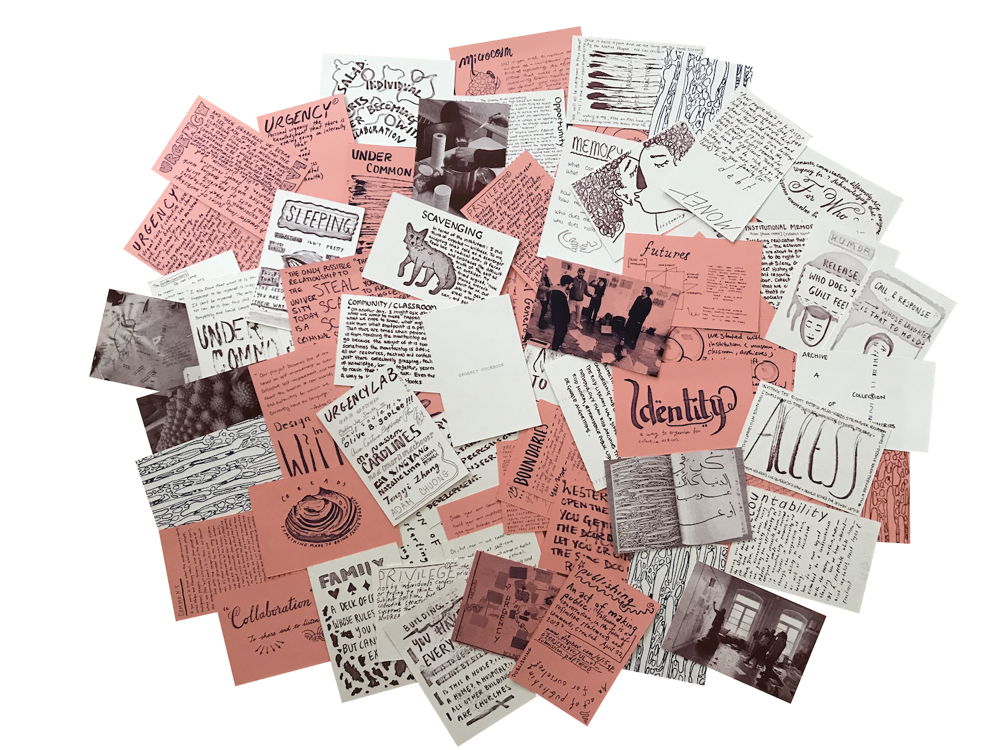
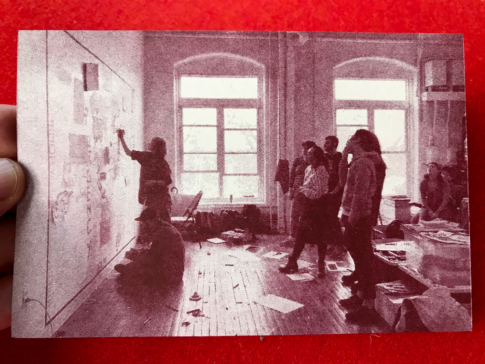
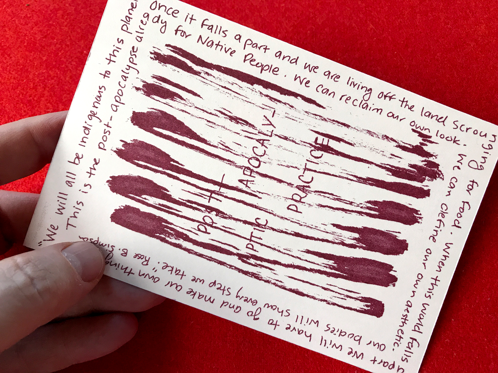
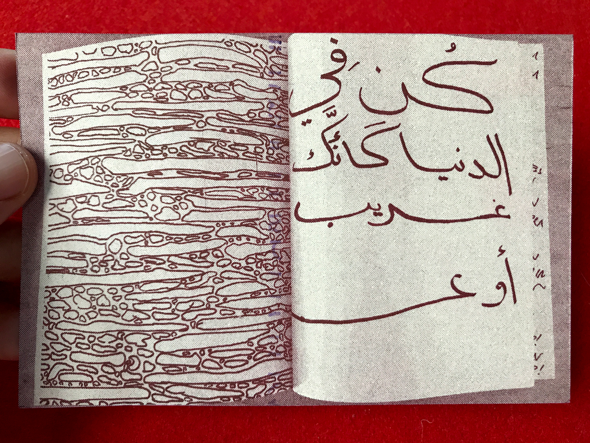
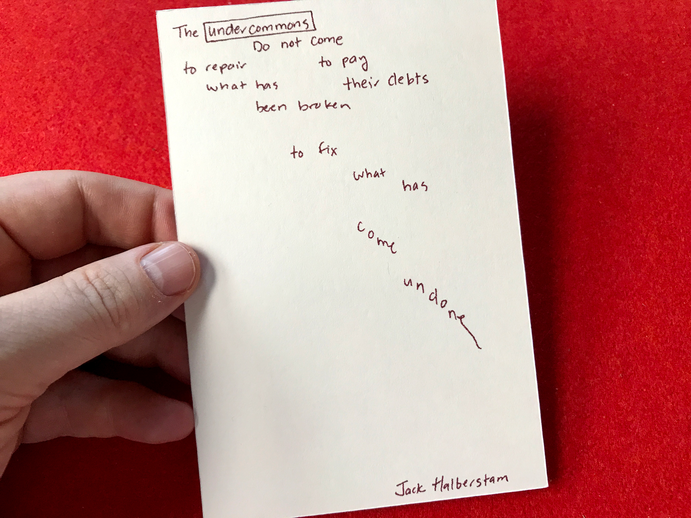
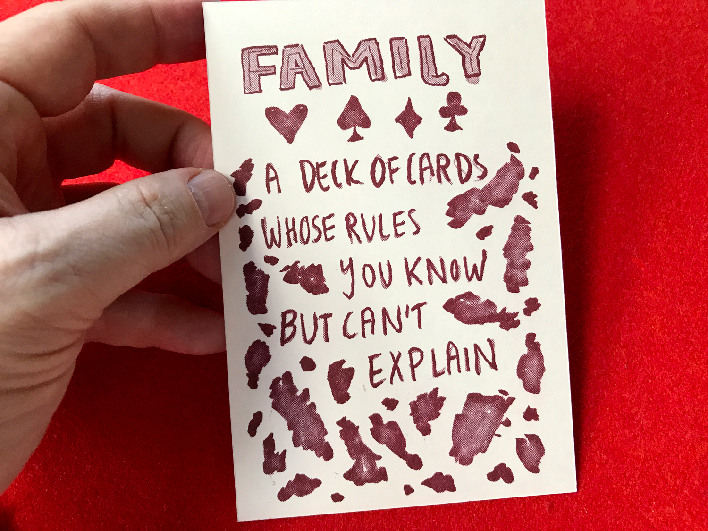
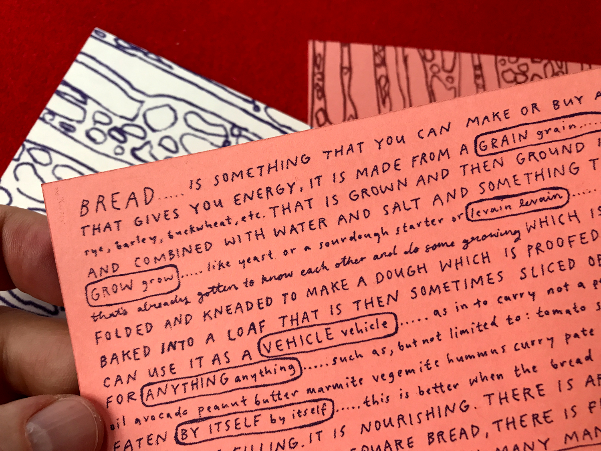
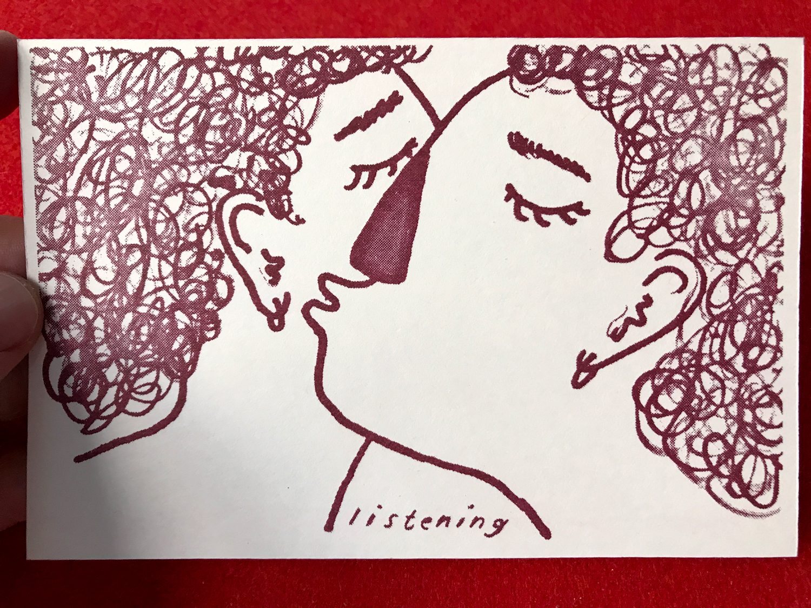
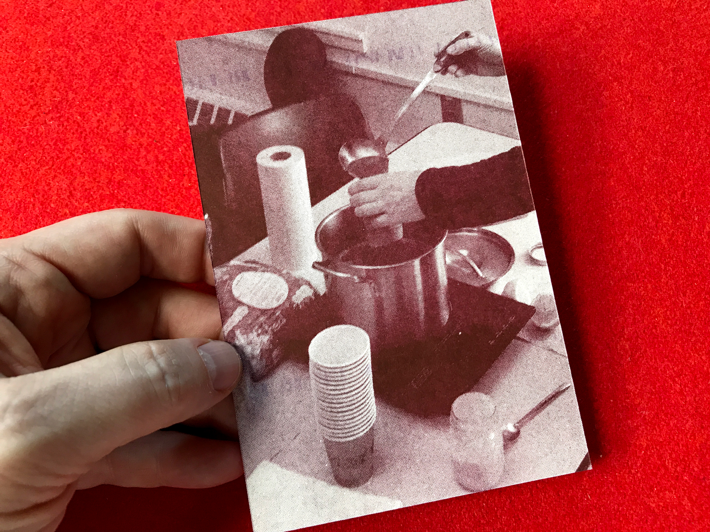
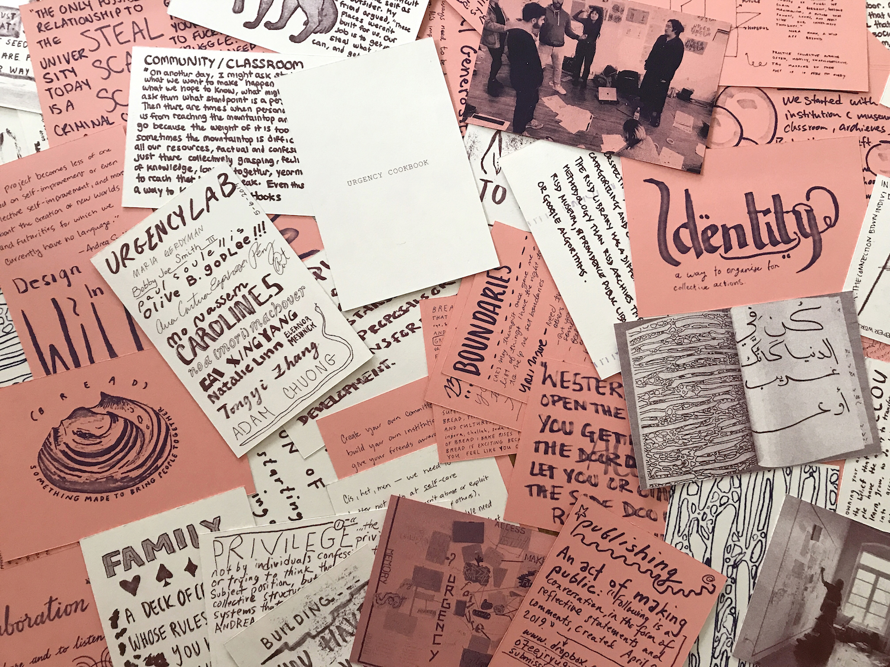

soulellis.com / work / urgencycookbook
URGENCY COOKBOOK (2019)

URGENCY COOKBOOK
URGENCY COOKBOOK is a collaborative publication in 80 parts, authored and hand-drawn by the students of Urgency Lab, a 12-week studio course taught by Paul Soulellis at Rhode Island School of Design. URGENCY COOKBOOK documents the language that evolved during the class in spring 2019, with ingredients and recipes for collective care—presented as terms, definitions, quotes, drawings, photos, and stories.


Deck of cards 4 in. x 6 in.
80 individual prints, with printed wrapper and bag
Edition of 30
Risograph printed in Pawtucket, RI
May 2019
 
Contributors: Xingyang Cai, Adam Chuong, Ana Cristina Espinosa Pérez, Maria Gerdyman, Olive Godlee, Natalie Linn, Noa Machover, Eleanor Meshnick, Mo Naseem, Bobby Joe Smith III, Caroline Smith, Paul Soulellis, Tongyi Zhang


Many of the terms included in URGENCY COOKBOOK originally appeared in an “urgency map” that the class created in week 4 of the semester. During week 8, the students re-created the map off-campus as a mural, in my studio space in Pawtucket, using pens, paper, and tape. In weeks 10 and 11, we gathered all of the terms from the map into a google doc and collaboratively wrote definitions, quotes, references, and notes, and expanded the list into a glossary/lexicon. In week 11, we collectively hand-wrote the entire doc onto a set of 80 cards, adding drawings, hand-lettering, and other material. These cards were then used to print URGENCY COOKBOOK.
 
 
 
 
Terms/concepts included in URGENCY COOKBOOK—
access, accountability, archive, authenticity, boundaries, bread, building, collaboration, communal care, community/classroom, critique, design in the wild, eating, failure, faking, family, for who?, futures, humor, identity, (il)legibility, institution, institutional memory, (in)visibility, joy, lack, listening, making, meal plans, memory, microcosm, money, neglect, opportunity, post-apocalyptic practice, privilege, publishing, radical generosity, rage, refusal, salad, scam/steal, scavenging, sharing, soup, space making, trust, undercommons, urgency, urgency lab